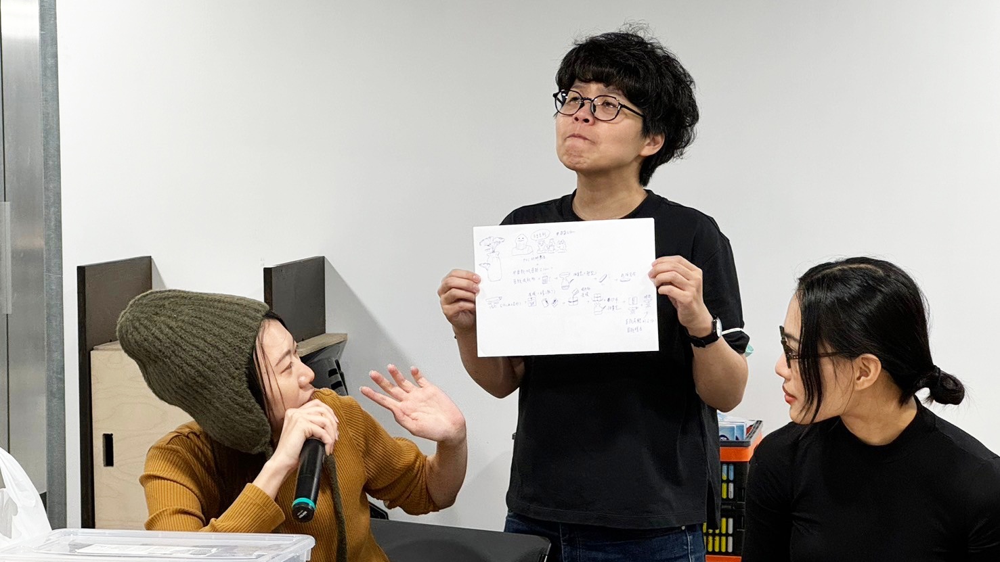

Curation

「微觀動態：有生命的材料與機器 III 」工作營為期四周，目標在探索真菌材料於設計的應用潛力。 此工作營是 2023 年「形態研究：有生命的材料與機器 II」的延續，將以兩種真菌材料「不會移動的」真菌（如鹿角靈芝和秀真菇）和「會移動的」黏菌為主要操作材料。這次有兩組 guests。一組為梁懷志和潘怡安組成的藝術團隊，有珍貴的實務和展出經驗。另外是由汎球生物藥劑研發 陳重志先生（菌種開發組組長）示範 pure mycelium 的教學和討論。
日期：11/27 - 12/18
時間：每週三晚上 18:30-21:30，詳細時間依照每週個別進度需求調整。
地點：實踐大學 VISION BASE
內容概要：
11/27（三）
Home Lab：真菌培養的基礎
12/4（三）
生長與模具、培養器皿的關係討論
12/11（三）
設計想法提案
12/18（三）
呈現研究結果原型